Just discover the most beautiful mountain valleys, crystal-clear rivers, and deep forests away from annyoing people and noise.
Hover over a pin to display las route details.
Budgetino, day-by-day schedulesimo, waypointisimo, campingato, and rulo fo ar doggos.
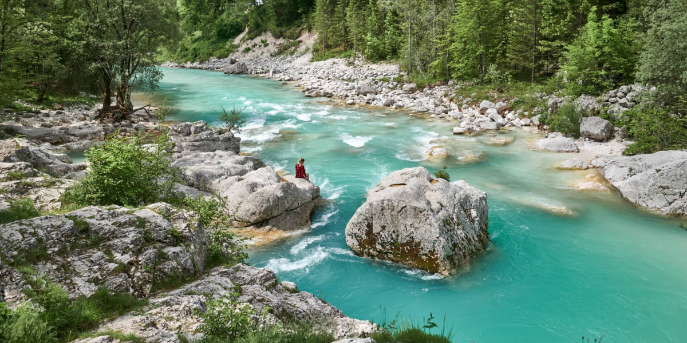
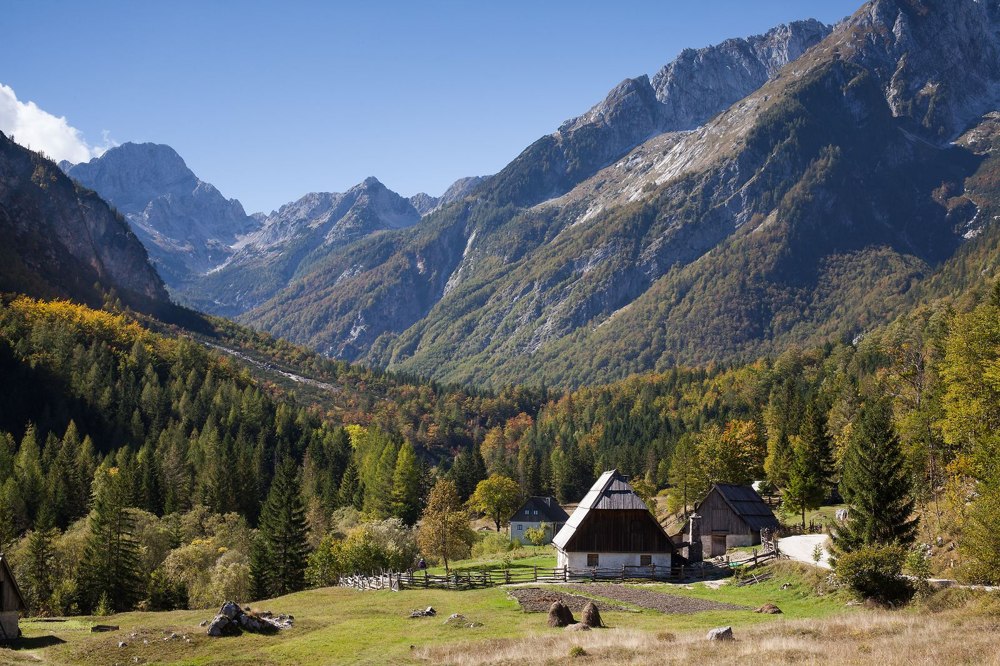
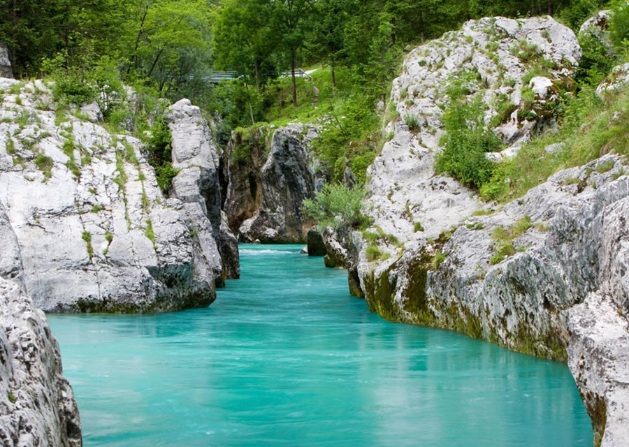
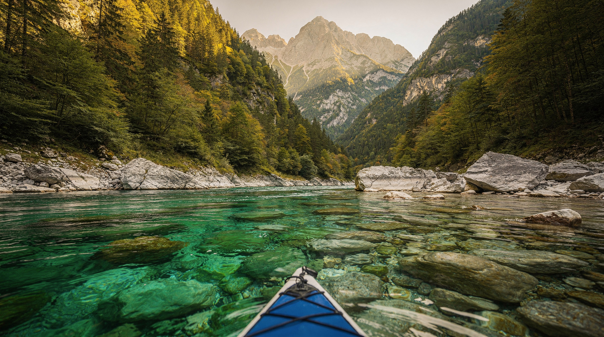
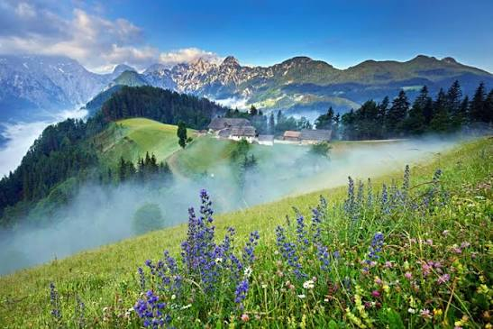
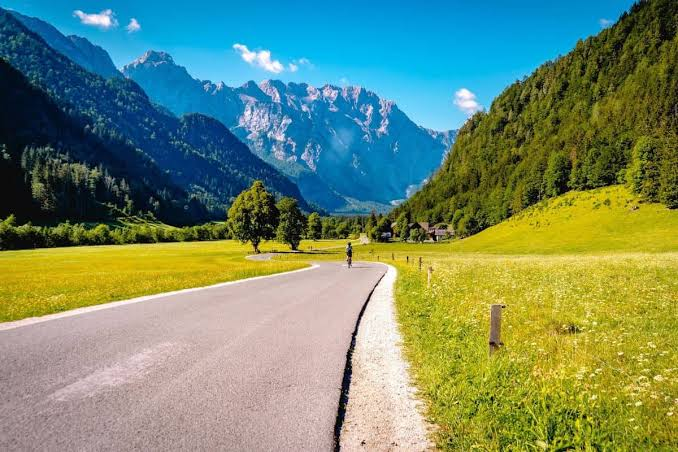
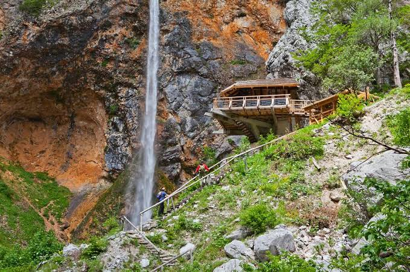
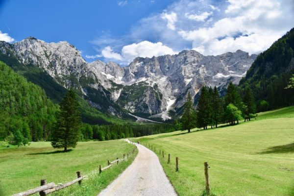
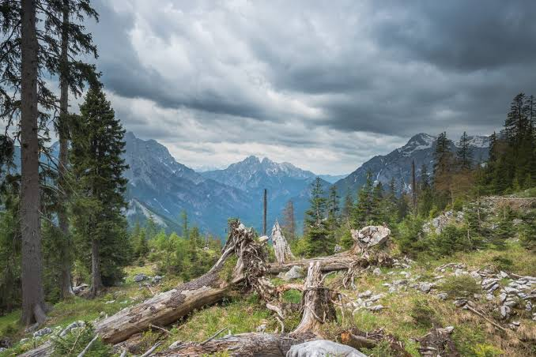
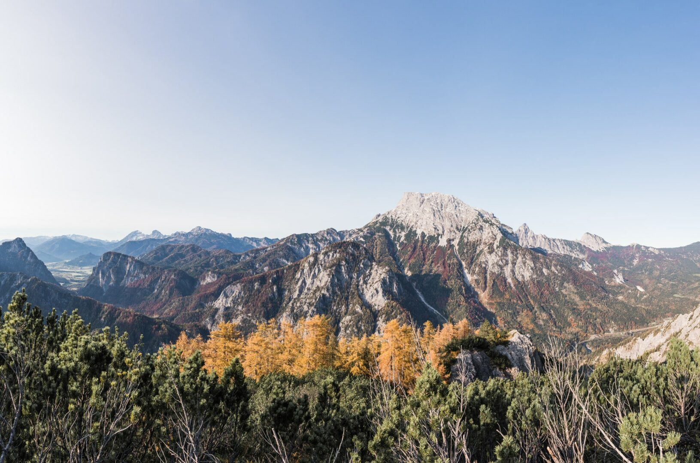
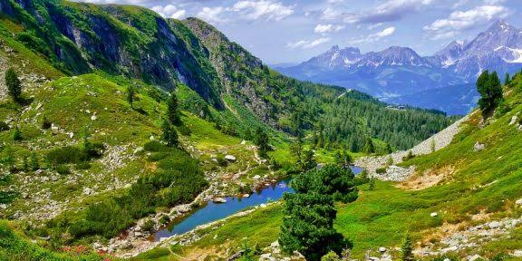
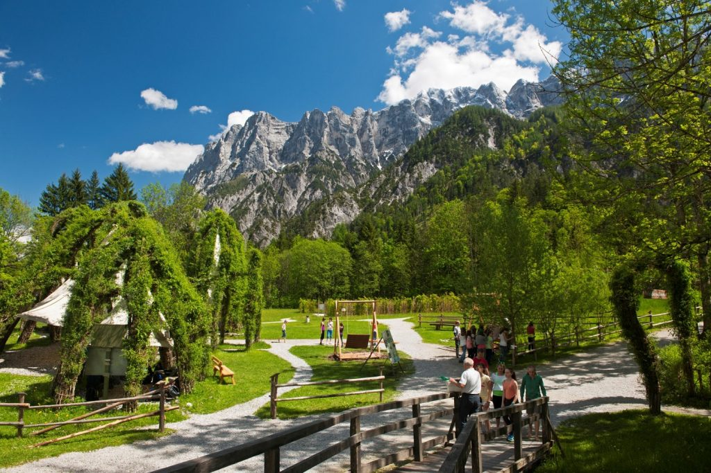
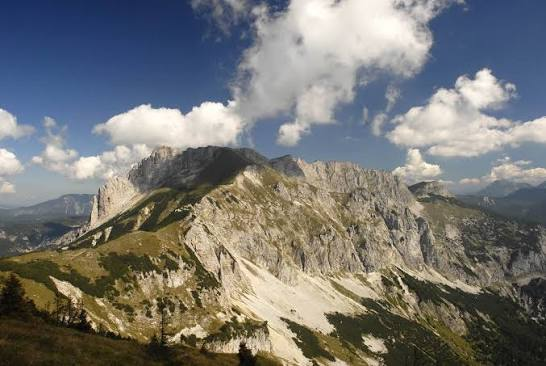
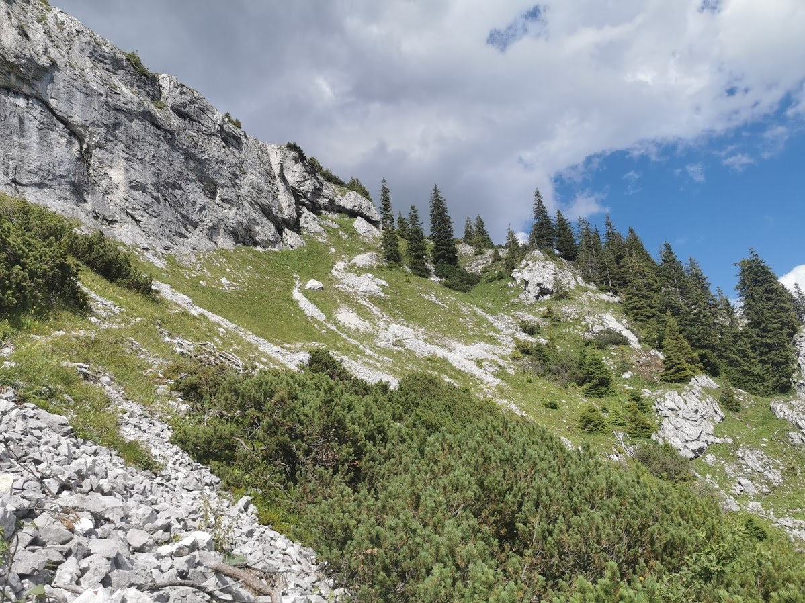
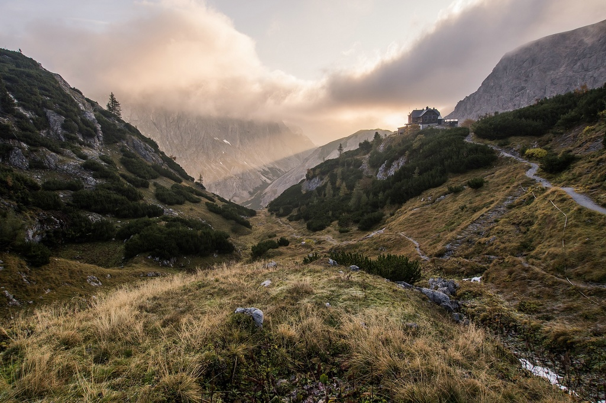
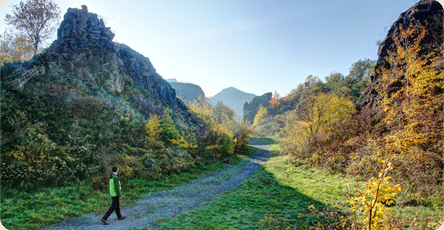
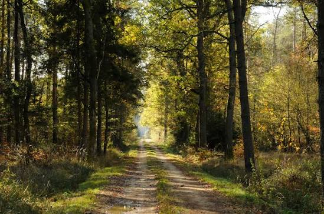
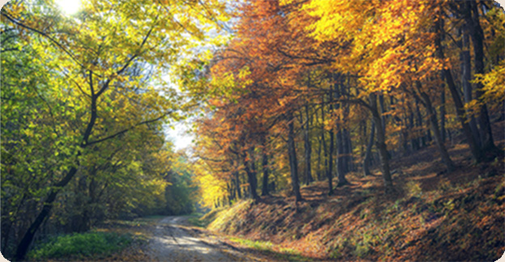
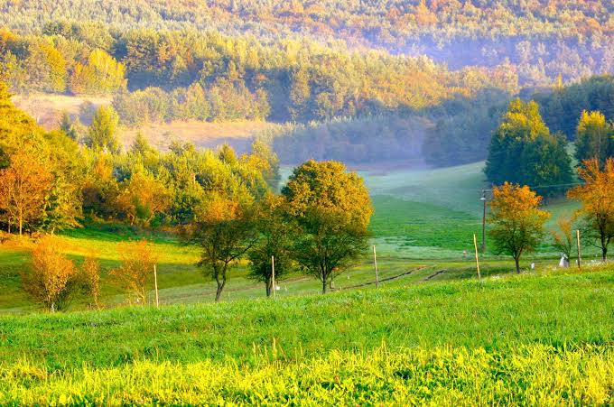
Charts that won't change your decision, but look good.